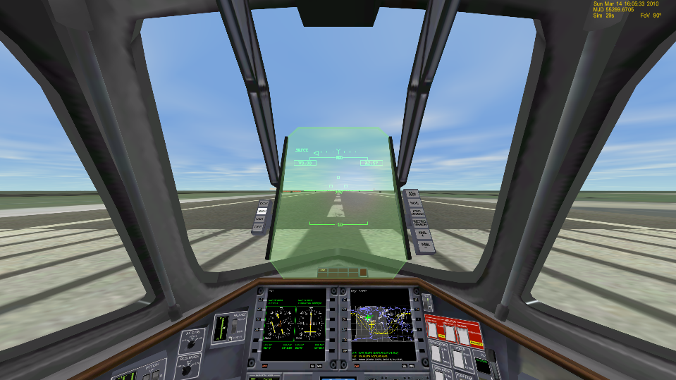

Orbiterの基本操作
コクピット上のボタンをクリックするか、キーボードを使って宇宙船を操作します。
キーボードでの操作については、以下のファイルを参照してください。
Orbiterキー操作一覧 日本語ファイル
必要なインターフェイス
| キーボード | 必須 | |
| テンキー | 必須 | ドッキングなどの操作で必要。 ホームセンター等で1000円くらいで買える |
| マウス | 必須 | |
| フライトスティック | オプション | ほとんどの機体で不要※ |
※宇宙ではほとんど使わないが、有翼機で大気圏内を飛ぶなら一本持っておきたい。
フライトスティックを使用する場合は、LaunchpadのJoystickタブをクリックして開く。
ドロップダウンリストから使用するスティックを選択する。
コクピットの選択
キーボードでF1を押すと、機内視点と機外視点を切り替えられる。
機内視点でF8を押すと、3つのコクピット画面を切り替えられる。
3Dコクピット

コクピットなし（UIのみ）
2Dコクピット
2Dコクピットでないと出てこないボタンもある。MODによって選べるコクピットが変わる。
探査機などのMODでは、2Dコクピットも3Dコクピットもないものが多い。
Orbiter2016では、一部のボタンの配置が変更されている。
タイムワープ
時間の進みを早くする・遅くすることができる。
コクピット上のボタンでは操作できない。
| キーボードT | 時間の進みを早くする |
| キーボードR | 時間の進みを遅くする |
画面右上には、現在時刻とタイムワープの倍率が表示されている。
情報メニュー
Orbiter2010
キーボードIで画面上の右端に日付時刻などの情報を表示する・消すことができる。
Fでフレームレートを表示することもできる。
Orbiter2016
画面上の中央で右クリックすると、情報メニューの設定ダイアログが開く。
| Show | 常に表示 |
| Hide | 常に非表示 |
| Auto-hide | マウスオーバーで表示 |
2Dパネル
↑or↓（矢印キー上下）で2Dコクピットのパネルをスクロールする。
Ctrlキーと↑or↓同時押しで、上下に隠れているパネルにアクセスできる。
RCSと動翼
RCSおよび大気圏内での動翼の操作は、テンキーかフライトスティックを使う。
2Dコクピット右端には、RCSとAF CTRLの2つのスイッチがある。
右クリックで右に、左クリックで左に回る。
いずれもOFFに設定すると無効になる。
Orbiter2016では、ボタンの位置が左端に移動している。
また、左クリックのみで操作するようになっている。
| RCS | Reaction control system | 姿勢制御エンジン |
| AF CTRL | Airfoil control | 大気圏内で使う尾翼などの操作 |
| RCS ROT | RCS Rotational | 機体を回転させる。 高度が上がって大気が薄くなったら使用する |
| RCS LIN | RCS Linear | 平行移動。 ドッキングのほか、細かい速度調整に使う |
RCSはテンキーの/（スラッシュ）でも切り替え可能。
Ctrl+/の同時押しでRCSのオン・オフを切り替える。
| AF PITCH | 昇降舵「だけ」を操作する |
| AF ON | すべての動翼を操作できる |
オートパイロット
RCS MODEの下のボタンはオートパイロット。
（Orbiter2016では2Dパネルの右端）
| Kill Rotation KILL-R |
KILL ROT | 回転を止める。 テンキー5でも操作可能 |
| Pro Grade PRO-G |
PRO GRD | 機首を前方（速度ベクトルの向き）に向ける |
| Retro Grade RET-G |
RETR GRD | 機首を後ろ（速度ベクトルの逆）に向ける |
| Orbit Normal(+) NML + |
NML + | 機首を軌道面に対し垂直にする。 軌道半径×速度ベクトルの外積※ |
| Orbit Normal(-) NML - |
NML - | Orbit Normal(+)の逆向き |
| Level Horizon HRLVL |
HORZ LVL | 地面に対して機体を水平にする |
| Hover Hold Alt | HOLD ALT | ホバーエンジンで高度(Altitude)を維持する |
※右手の人差し指を軌道半径、中指を速度ベクトルとしたとき、親指の方向
メインエンジン
2Dコクピット上のレバーをマウスドラッグするか、フライトスティックに付属するレバーで操作できる。
また、テンキーから操作することもできる。
Orbiterでは、正確なタイミングでエンジンを完全に停止しなければならないことが多い。
スロットルレバーではなく、キーボードでの操作がおすすめ。

| テンキー+（プラス） | メインエンジン全開 |
| テンキー-（マイナス） | エンジン出力を絞る or 逆噴射 |
| テンキー*（アスタリスク） | エンジン停止 |
Ctrlキーとの同時押しで出力を固定する。
Ctrlを押したまま+or-を押して調節する。
ホバーエンジン
| テンキー0 | ホバーエンジンの出力を上げる |
| テンキー. | ホバーエンジンの出力を下げる |
その他の操作
以下はコクピット上のボタンでも操作できるが、キーボードを使うことが多い。

| DeleteorInsert | ELEVATOR TRIM | トリムアップ・ダウン |
| Ctrl+B (2010) | AIRBRAKE | エアブレーキ |
| Bで展開 Alt+Bで閉じる (2016) |
||
| G | GEAR | ランディングギア（着陸用の車輪）の展開・収納 |
| K | NOSECONE | ノーズコーンの開閉 |
| Ctrl+D | DOCK RELEASE | ドッキングを解除 |
| ,（コンマ） or .（ピリオド） | WHEEL BRK | ホイールブレーキ（左右） |
MFDの基本操作
2Dパネルの中央には、2つのMFDがある。
MFDでは、現在の軌道や地図などを表示したり、マニューバを作成したりすることができる。
一番下のPWRボタンでMFDのオン・オフ。
SELボタンで使いたいMFDを選択する。
SELをクリックしてから、両サイドの>ボタンで選択。
使いたいMFDが出てこない場合は、もう一度SELをクリックすると2ページ目に移動する。
MNUをクリックすると、各MFDにおけるボタンの機能について説明文が表示される。
| MFD | Multi Function Display | 多機能ディスプレイ |
| PWR | Power | 電源 |
| SEL | Select | 選択 |
| MNU | Menu | メニュー |
ターゲットの指定
Orbit MFDやMap MFDなどでターゲットを指定する場合は、以下のような流れになる。
- MFDの隣にあるTGTボタンをクリック（キーボードならShift+T）
- 矢印キーで選択するか、キーボードでEnterを押してから文字入力する
- もう一度Enterを押して確定
HUDの切り替え
Hキーを押すと、状況に合わせてHUDの表示を切り替えることができる。
Surface（地上）
Orbit（軌道）
Docking（ドッキング）
また、MFDのHUDボタンをクリックすると、対応するHUDに切り替えることができる。
HUDの表示が見づらいときは、Alt+HでHUDの色を変えることができる。
デスクトップに戻る
Altキーを押しながらTabキーを押せば、ほかのゲームと同様にデスクトップに復帰できる。
ただし、D3D9ClientでTrue Full Screenを選択すると無効になる。